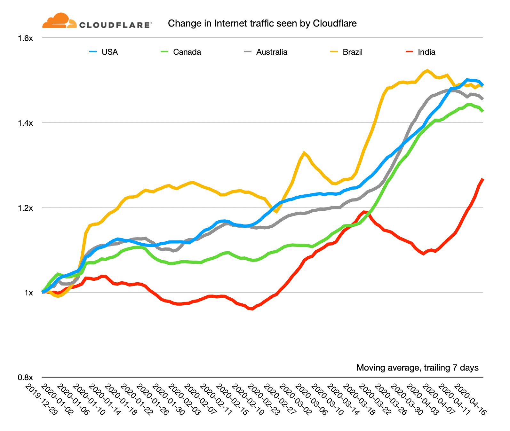

Technology
UK internet use doubles in 2020 due to pandemic
Boxing Day was the busiest day for broadband users, according to data from Openreach, which runs much of the UK's broadband network. Over the festive period, large parts of the country were put into tier four restrictions, and Christmas gatherings were limited. Live sport, online gaming and home-working all contributed to the boost. Openreach operates the cables, ducts, and other infrastructure used by many other providers, including BT and Sky. It said that this year:
- Openreach customers consumed 50,000 petabytes of data this year, compared to 22,000 in 2019
- Properties connected to its fibre broadband used, on average, nine gigabytes of data a day
- On Boxing Day, a record 210 petabytes was used on the network
 30 December 2020Technology
30 December 2020Technology
| Country | User(millions) | Increased/decreased |
|---|---|---|
| China | 1,000.02 | Increased |
| India | 658 | Increased |
| USA | 307.2 | Increased |
| Brazil | 165.3 | Increased |
| Russia | 129.8 | Increased |
| Japan | 118.3 | Increased |
